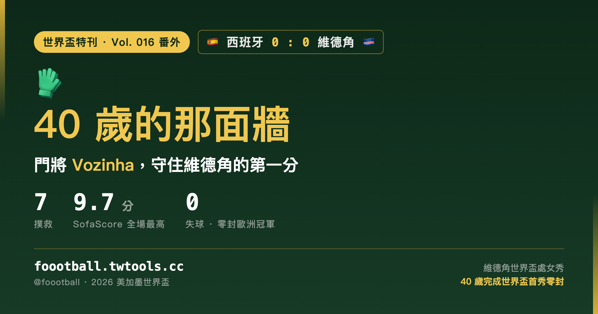

40 歲的那面牆：Vozinha 守住了維德角的第一分
2026 世界盃 H 組首輪，歐洲冠軍西班牙 0-0 被世界盃處女秀的維德角逼平。西班牙整場 74% 控球、27 次射門、7 次射正、預期進球（xG）逼近 2.3，卻始終攻不破對方球門。站在風暴最深處的，是維德角 40 歲門將 Vozinha：他完成 7 次撲救、拿下 SofaScore 全場最高的 9.7 分與 FIFA 官方最佳球員，並被多家數據媒體稱為世界盃史上『處女秀就完成零封』年紀最大的門將。這篇特刊，想把這道牆，從那一夜到那個人，完整地講一次。

2026 世界盃特刊｜Vol. 016 番外
有些比賽，比分是 0-0，卻一點都不沉悶。
2026 世界盃 H 組首輪，在美國亞特蘭大的梅賽德斯-賓士體育場（Mercedes-Benz Stadium），世界排名第二、剛拿下歐洲國家盃的西班牙，面對世界排名六十開外、生平第一次踏上世界盃的非洲島國維德角（Cabo Verde）。賽前，這幾乎被當成一場走過場的熱身——西班牙整場控球 74%、射門 27 次、射正 7 次，預期進球（xG）逼近 2.3；維德角主動讓出中場，把防線壓進禁區前那三十碼，整場只想守住一件事。九十分鐘過後，計分板上是 0-0。對維德角來說，這一分，是他們的世界盃隊史第一分；對西班牙來說，這是一個怎麼想都想不通的夜晚。
而站在這道防線最深處、把一切擋下來的，是一個 40 歲的男人。
一、那面 40 歲的牆：七次撲救，與一個關不上的夜晚
維德角的門將叫 Vozinha，本名 Josimar José Évora Dias，比賽當天是 40 歲又 12 天。整場比賽，他完成了 7 次撲救，其中 6 次來自禁區內的近距離射門——這個數字背後，是西班牙一波又一波的圍攻，和他一次又一次把球從門線上拿回來。
幾次撲救，足以單獨拿出來說。
上半場第 39 分鐘，是西班牙整場最接近破門的一刻。一波攻勢裡，Ferran Torres（費蘭·托雷斯）的射門擊中橫梁彈出，緊接著 Mikel Oyarzabal（奧亞薩瓦爾）的頭槌已經朝著球門死角飛去——就在西班牙球員準備舉手慶祝時，重心原本已經偏掉的 Vozinha 硬是重新蹬地躍起，用指尖把這記近乎必進的頭槌托過了橫梁。上半場補時前後，西班牙又靠角球與定位球製造威脅，Aymeric Laporte（拉波爾特）在人群中力壓爭頂、頭槌砸向球門下角，Vozinha 在視線被擋的情況下側身一撲，又一次在皮球將要過線的瞬間把它撥了出去。兩次世界級的救險，讓雙方帶著 0-0 走進更衣室，也讓西班牙球員的臉上開始寫滿不可置信。
下半場，西班牙越打越急，Vozinha 卻越站越穩；無論是禁區內的近距離攻門，還是人群中的二點球處理，他的站位與選位幾乎沒有出過錯。賽後，SofaScore 給了他 9.7 分——全場最高，他也順理成章拿下 FIFA 官方的當場最佳球員。數據網站還給了一個更說明問題的指標：撲救阻止進球值（goals prevented）1.46，意思是以他面對的射門質量，一個平均水準的門將大概會失 1 到 2 球；而他，守住了 0。
二、數據裡的不對稱：74% 控球、27 次射門、0 顆進球
如果只看技術統計，這幾乎是一面倒的比賽。
| 統計指標 | 西班牙 | 維德角 |
|---|---|---|
| FIFA 世界排名 | 第 2 | 第 67 |
| 控球率 | 約 74% | 約 26% |
| 射門次數（射正） | 27（7） | 極少威脅，補時才有一次射正 |
| 預期進球 xG | 約 2.3 | 偏低 |
| 最終比分 | 0 | 0 |
西班牙幾乎把整場比賽踢在維德角半場，傳球數、進攻三區次數、角球數全面輾壓。問題在於，這些控球與傳導，最後大多停在維德角禁區線外——主帥 Luis de la Fuente（德拉富恩特）治下這套以控球見長的體系，碰上一支鐵了心退守、把人數堆在禁區的對手時，缺口遲遲打不開。雪上加霜的是，兩名最具突破與寬度的邊鋒 Lamine Yamal（拉明·亞馬爾）與 Nico Williams（尼科·威廉斯）因傷沒有先發，直到約莫第 70 分鐘才替補登場，西班牙上半場的進攻因此顯得格外平面、缺少能撕開防線的那一下。
這場 0-0，其實連著西班牙一個更長的尷尬。根據 Opta 的統計，自從 2022 年世界盃對日本、在第 11 分鐘取得進球之後，西班牙在世界盃賽事裡已經累計傳了 2,500 球、射了 49 次門，卻再也沒有從運動戰中攻入一球。換句話說，這支球隊的控球與傳導從不缺，缺的是把優勢轉成進球的最後一擊——而維德角這一夜，正好把這道老問題重新擺到了所有人面前。
賽後記者會上，德拉富恩特為球隊辯護，強調這支西班牙『無論如何都是穩定可靠的』，並提醒外界球隊近年在正式賽裡仍維持著長期的不敗穩定。話說得不算錯，但西班牙國內媒體與球迷顯然沒那麼買單——一場面對世界盃新軍的悶平，足以讓所有關於戰術固執的質疑重新浮上檯面。
三、紀錄與對照：最年長的「世界盃處女秀零封」
Vozinha 這一夜，也寫進了世界盃的紀錄裡——但要把紀錄說準。
他被多家數據媒體稱為世界盃史上完成「處女秀零封」年紀最大的門將：40 歲，第一次踢世界盃，第一場就守住球門不失。這是一項罕見、屬於他自己的紀錄。
至於撲救次數，則有一個漂亮的歷史對照。Opta 翻出來：自 1966 年以來，唯一在世界盃單場做出比 Vozinha 更多撲救的 40 歲以上門將，是北愛爾蘭傳奇 Pat Jennings（帕特·詹寧斯）——1986 年世界盃對巴西那場，恰逢他 41 歲生日，他撲了 10 次。只是那一晚北愛爾蘭 0-3 落敗，Jennings 並沒有守住零封。也就是說，Vozinha 不是「40 歲以上撲救最多」（那仍是 Jennings 的 10 次），但他做到了 Jennings 當年沒能做到的事：在這個年紀，把對方完整地擋在門外。兩個跨越四十年的老門將，各自留下了一半的傳奇。
四、Vozinha 是誰：從明德盧的街頭，到世界盃的門線
要理解這道牆，得回到他出發的地方。
Vozinha 出生在維德角聖維森特島的明德盧（Mindelo），足球生涯起步於家鄉的小球會。他不是那種少年得志、早早被歐洲豪門相中的天才——據報導，他直到 25 歲才開始真正的職業生涯，離開維德角、輾轉到安哥拉落腳。此後的十多年，他是個不折不扣的足球浪人：安哥拉、摩爾多瓦、葡萄牙、賽普勒斯、斯洛伐克……一路漂泊，在賽普勒斯 AEL 利馬索爾還拿過當地的盃賽冠軍。世界盃前夕，他與葡萄牙球會沙維什（G.D. Chaves）的合約走到尾聲，幾乎是以自由之身，投入了這趟國家隊的世界盃征途。一位身價在轉會市場上以萬歐元計、世界盃前還沒有下一份合約的 40 歲門將，就這樣站上了世界足球最大的舞台。
連「Vozinha」這個名字，背後都有故事。據維德角與葡語媒體的說法，這個葡萄牙語裡意為「小聲音／小奶奶」的綽號，來自他的童年——父親在外、母親身兼數職，小 Josimar 主要由祖父母帶大。在明德盧的街頭足球裡，性子倔又好強的他常跟比自己大的孩子拼搶、吃虧受挫，每次哭著回家，玩伴就笑他「又要跑回去找奶奶（Vozinha）告狀」。這個起初讓他討厭的綽號，後來反而被他印上了球衣背後——既是為了和球隊裡另一個 Josimar 區分，也是向把他帶大的祖父母致意。如今，這個名字成了維德角足球的一個符號。
五、看台上，那個空著的位置
終場哨響的那一刻，40 歲的 Vozinha 在草皮上落了淚。那不只是夢想成真的眼淚，還夾著一個遺憾——他最想讓她看到這一刻的人，沒能來到現場。
2026 年起，美國針對部分國家的訪客簽證推行了一項「簽證擔保金」試辦計畫，把維德角等國家納入其中。符合條件的申請人，除了一般簽證費用之外，還可能被要求繳交一筆最高達 1.5 萬美元（約合 1.1 萬英鎊）、離境合規後可退還的擔保金。對維德角的普通家庭來說，這筆錢無異於天文數字。Vozinha 的母親，正是因為這道門檻，沒能在期限內完成簽證，缺席了兒子職業生涯最光亮的這一夜。他也為早已不在人世、沒能親眼看到他踏上世界盃的祖父母而哭——那兩位把街頭那個愛哭男孩帶大的人。
後續即使出現針對世界盃觀賽旅客的簽證措施調整，對 Vozinha 的母親而言，這個時間點也已經錯過了。賽場上他守住了 0，把豪門擋在門外；看台上，卻有一個位置，怎麼也填不滿。一邊是零封歐洲冠軍的狂喜，一邊是家人缺席的空缺——這兩種情緒同時落在一個 40 歲男人身上的樣子，大概比任何一次撲救都更難演。
六、而且，維德角差一點就贏了
最後得補一句：那一夜，維德角不只是守。
比賽尾聲，這支島國球隊甚至幾度威脅到要改寫結局。第 88 分鐘，輪到西班牙門將 Unai Simón（烏奈·西蒙）登場——維德角後衛 Diney Borges（迪尼·博爾赫斯）在一次定位球裡力壓西班牙防線頂出頭槌，被一直閒著的西蒙神勇撲出；在這之前，維德角也有過一次禁區內的射門機會，被西班牙球員捨身擋下。一支首次參賽、被認為只能挨打的球隊，最後居然是離絕殺更近的那一方——這恐怕是西班牙最不願意回想的部分。
九十分鐘的故事講完，H 組的格局也跟著動了。意外丟掉兩分，讓西班牙在小組頭名爭奪上立刻失去了主動權；若最終屈居小組第二，淘汰賽的路徑可能變得更難預測。至於維德角，這一分究竟能不能帶他們走得更遠，還要看後面兩輪——但對一個人口只有五十多萬、第一次來到世界盃的島國而言，能在這座舞台上逼平歐洲冠軍、拿下隊史第一分，本身就已經是一段會被反覆訴說的歷史。
足球最迷人的地方，往往不在強隊如何輾壓，而在於它偶爾會把舞台，留給一個四十歲、漂泊半生、身價以萬歐元計的門將，讓他用九十分鐘告訴全世界：有些牆，不是用名氣砌的，是用一整個生涯的不肯放棄砌起來的。而撐起這道牆的，也從來不只是他一個人——身前那條只犯規一次、整場死守的維德角防線，同樣是這一分的主人。0-0 這個比分，西班牙會很快想忘掉；但對 Vozinha 和維德角，這一夜值得記很久。
資料來源：Opta（The Analyst）賽事數據、SofaScore 球員評分與守門數據、FIFA 官方最佳球員、Reuters、The Guardian、ESPN、Sky Sports 等賽後報導，以及 Transfermarkt 與維德角／葡語媒體（OJogo、Estadão 等）對 Vozinha 生涯與綽號的背景報導，交叉核對。比分、撲救次數、評分、控球與射門數據以賽事數據商口徑為準；「處女秀零封最年長」屬數據媒體說法、個別生涯細節與簽證金額級距以原始來源為準。時間以台北時間換算，實際以官方公告為準。
常見問題
Vozinha 那場到底撲了幾球？評分多少？
維德角門將 Vozinha 對西班牙完成 7 次撲救（其中 6 次來自禁區內），SofaScore 給出全場最高的 9.7 分，並獲選 FIFA 官方當場最佳球員；數據商估算他這場「阻止進球值」約 1.46 球。
他打破了什麼世界盃紀錄？
據多家數據媒體，他是世界盃史上「處女秀就完成零封」年紀最大的門將（40 歲）。要注意：論單場撲救數，40 歲以上門將的世界盃紀錄仍是 Pat Jennings 在 1986 年對巴西的 10 次——但 Jennings 那場 0-3 落敗、沒有零封，這正是 Vozinha 做到、而他當年沒能做到的事。
西班牙明明壓著打，為什麼進不了球？
西班牙整場控球約 74%、射門 27 次、xG 逼近 2.3，但兩名邊路爆點 Yamal 與 Nico Williams 因傷直到約第 70 分鐘才替補上場，進攻缺少寬度與突破；加上維德角全場密集退守禁區，西班牙傳導多停在防線外。Opta 也指出，自 2022 世界盃對日本進球後，西班牙在世界盃賽事裡已累計約 2,500 次傳球未再有運動戰進球。
Vozinha 的母親為什麼沒到現場？
受美國 2026 年起對部分國家試辦的「簽證擔保金」計畫影響，維德角公民申請訪客簽證可能被要求繳交最高 1.5 萬美元、離境後可退還的擔保金。這道門檻讓 Vozinha 的母親無法及時完成簽證，缺席了比賽；他在賽後落淚時也提到了這件事。
Tags：世界盃, 2026世界盃, 西班牙, 維德角, Vozinha, 門將